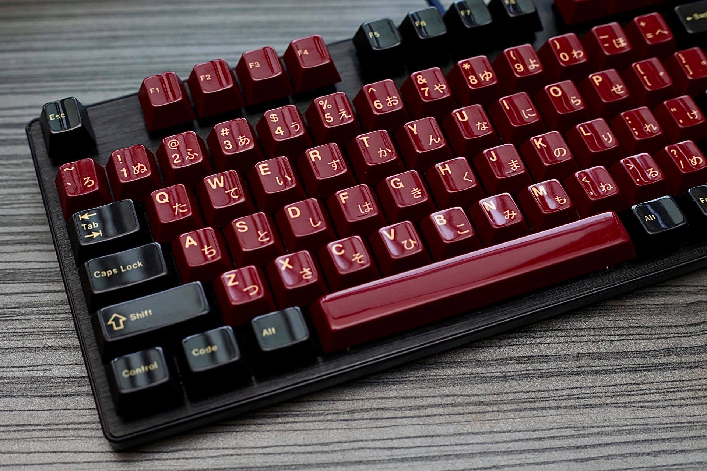

Keycaps
Material
Keycaps are mainly made from two types of plastic, ABS and PBT. These different material offer different acoustic responses and have different longevity. Many basic office keyboards are made with ABS keycaps, while more premium and hobbyist keycaps are made from PBT.
The main difference between these two materials comes down to its longevity and sound profile. ABS keycaps develop a shine a lot faster, however they create a more higher pitched acoustic sound. You often see this shine on used office keyboards, where the middle of the keycaps have a shine on them, as opposed to a newer set of ABS keycap.
PBT keycaps however, have a longer lifetime. This means that it takes longer for them to develop the shine that we see on keycaps. Although it is not completely preventable, PBT does take longer to shine. There are also other ways one can prevent their keycaps from shining. Most hobbyists own more than one set of keycaps, so rotating keycaps to ensure a longer life period is a common practice. However, if that is not an option, making sure you have clean and oil-free fingers/hands before use will also help.
Layouts
When purchasing keycaps, it is important to keep in mind the layout of the keyboard you want to build. Most common sizes are covered by standard base kits, however many keycap sets offer additional add-ons, such as spacebar and numbar kits. These additional kits can add both aestheic or functional keys to your keyboard, as you might want more accent colors, or your keyboard might contain a number pad.